posefast| algo | fps_med | jitter_ms | dt_ms_p95 | ang_jitter_deg_rms | trans_jitter_mm_rms | relock_p50_ms | p95_gap_ms | drift_pos_mm | drift_ang_deg | dm_mean |
|---|---|---|---|---|---|---|---|---|---|---|
| AprilTag | 31.120 | 221.077 | 412.693 | 15.261 | 62.317 | 477.452 | 1401.519 | 253.661 | 3.253 | 60.003 |
| FaceMesh | 31.155 | 14.171 | 47.674 | 4.713 | 22.561 | 298.562 | 298.562 | 122.880 | 8.855 | 126.397 |
| algo | ID | fps_med | fps_min | fps_max | jitter_ms | dt_ms_p95 | n_segments | mean_seg_s | p95_gap_ms | n_gaps | relock_p50_ms | ang_jitter_deg_rms | ang_deg_p95 | trans_jitter_mm_rms | trans_mm_p95 | drift_pos_mm | drift_ang_deg | dm_mean | dm_p05 | dm_p95 |
|---|---|---|---|---|---|---|---|---|---|---|---|---|---|---|---|---|---|---|---|---|
| AprilTag | 0 | 31.120 | 0.636 | 48.706 | 221.077 | 412.693 | 13 | 0.343 | 1401.519 | 12 | 477.452 | 15.261 | 35.778 | 62.317 | 111.171 | 253.661 | 3.253 | 60.003 | 39.482 | 72.520 |
| FaceMesh | 0 | 31.155 | 3.349 | 124.912 | 14.171 | 47.674 | 2 | 8.416 | 298.562 | 1 | 298.562 | 4.713 | 9.087 | 22.561 | 43.768 | 122.880 | 8.855 | 126.397 | 94.884 | 170.044 |
| algo | BetaX | BetaY | BetaZ |
|---|---|---|---|
| AprilTag | 65.40 | 77.09 | 36.51 |
| FaceMesh | 81.56 | 105.13 | 34.42 |
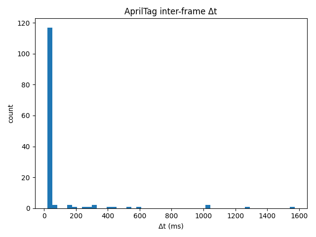
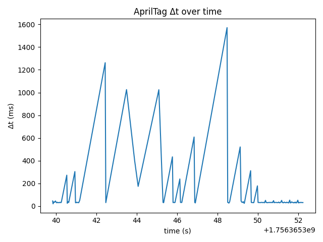
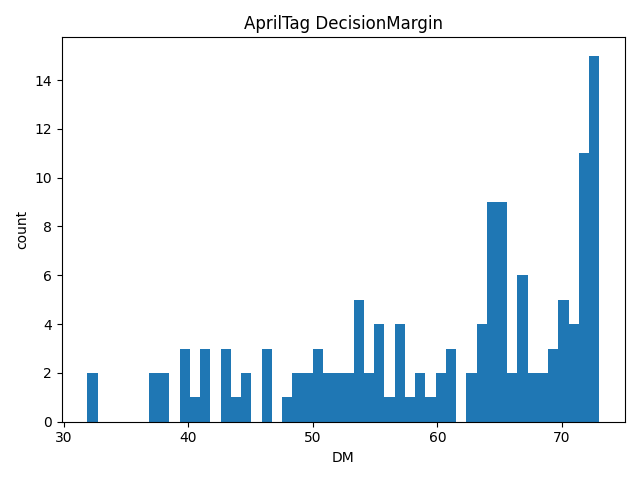
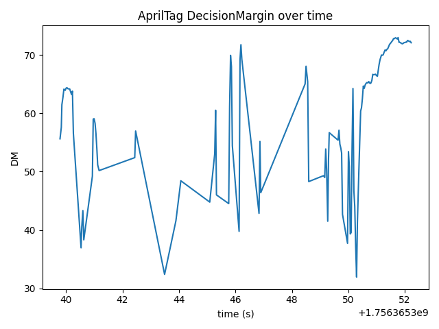
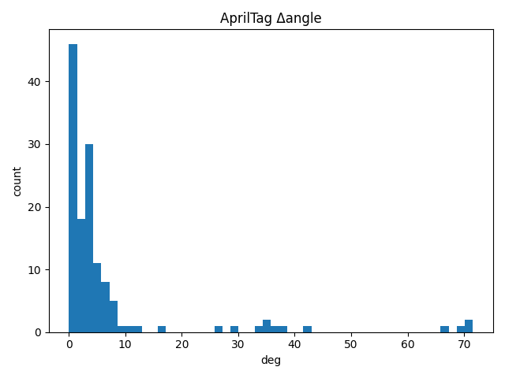
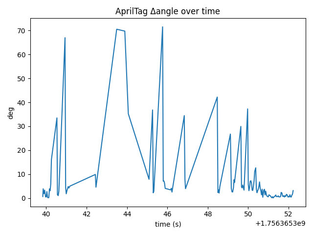
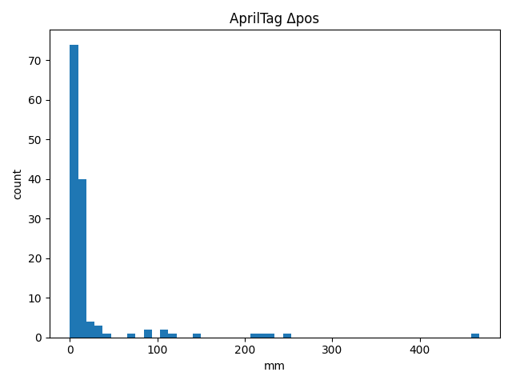
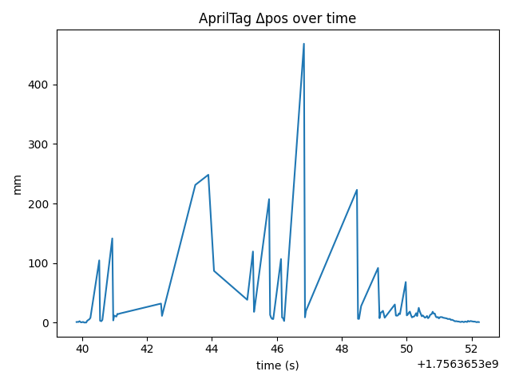
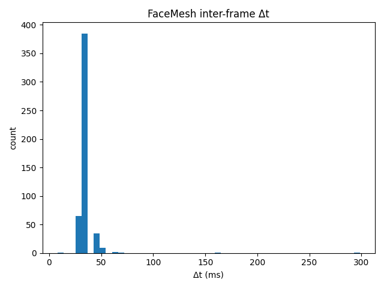
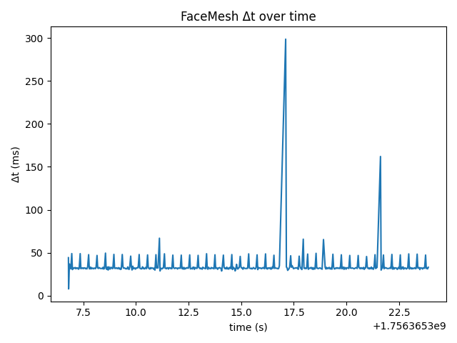
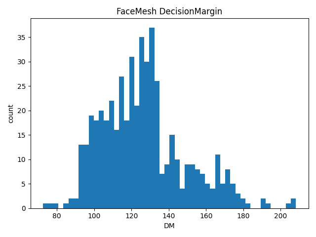
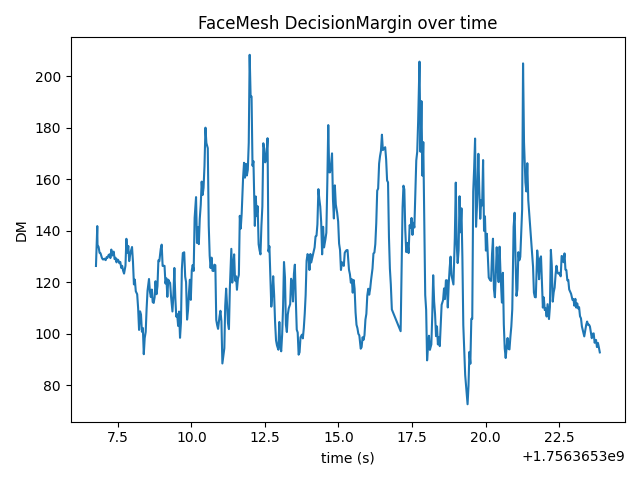
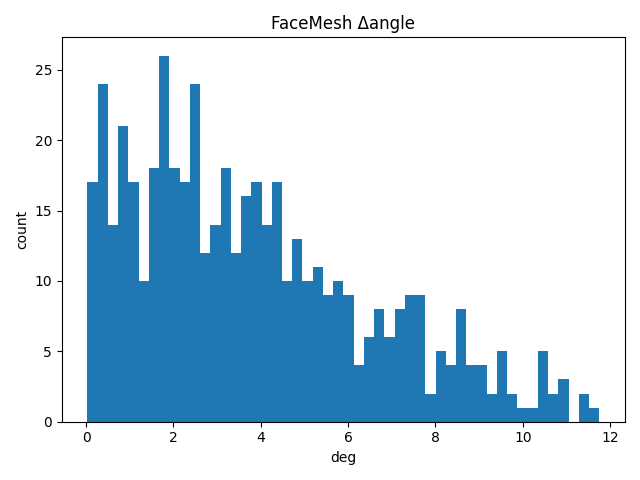
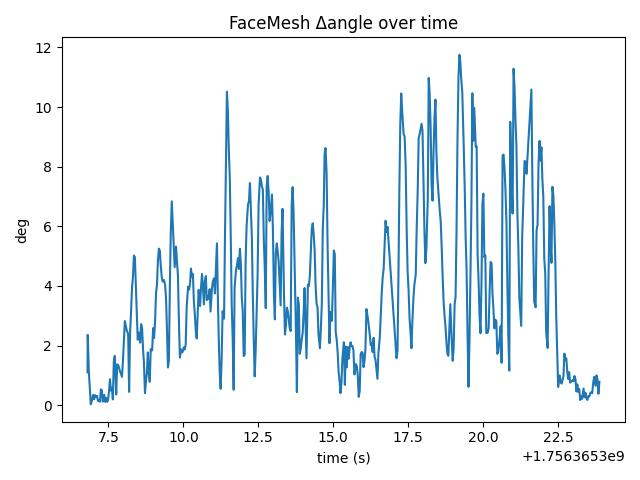
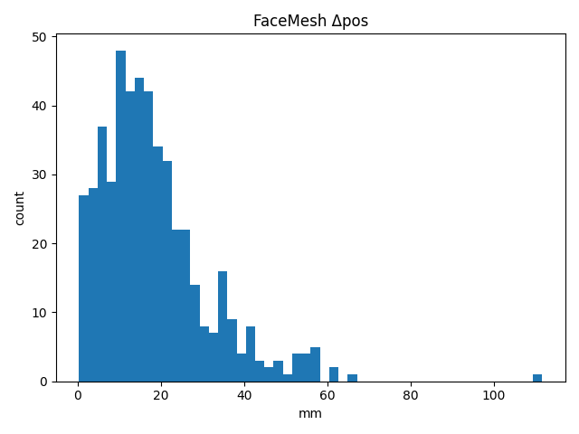
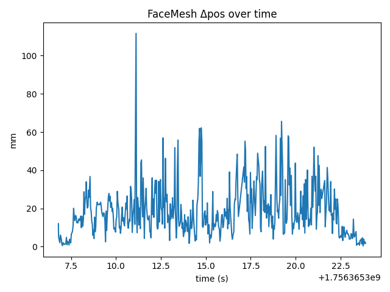
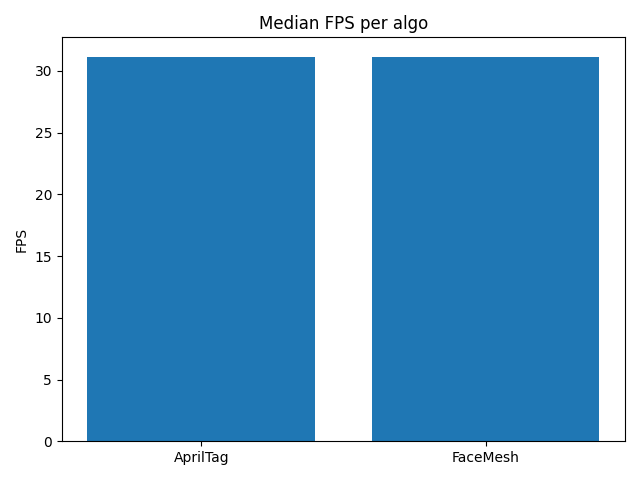
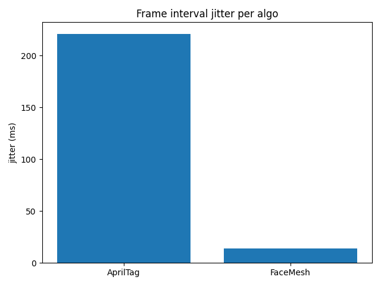
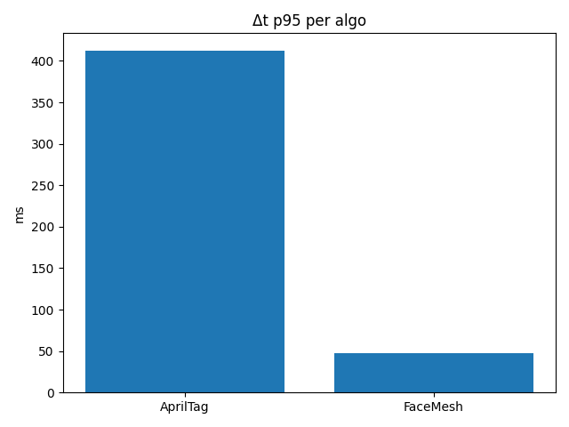
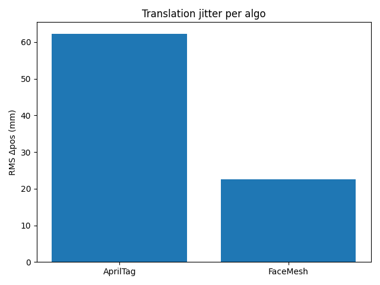
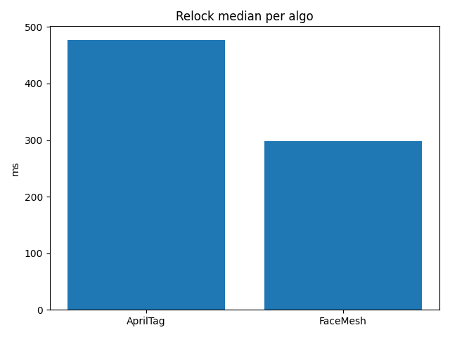
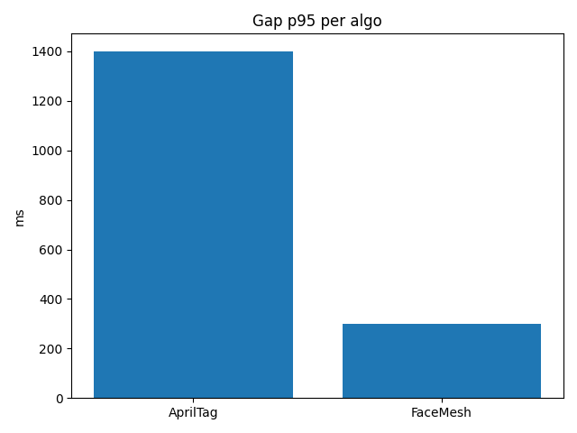
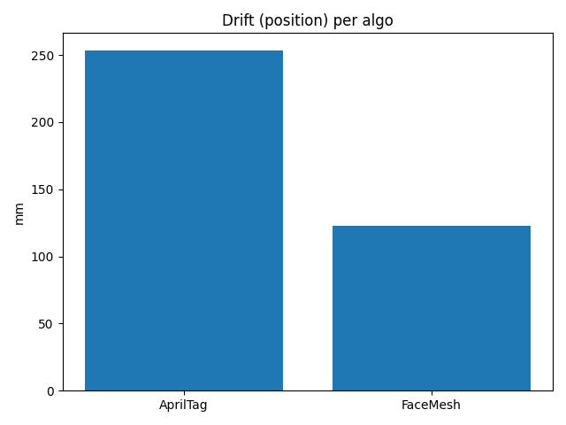
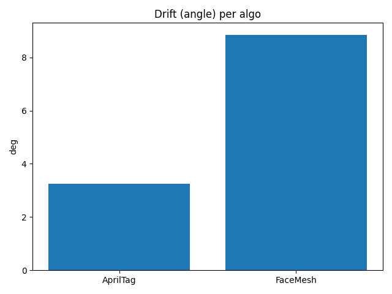
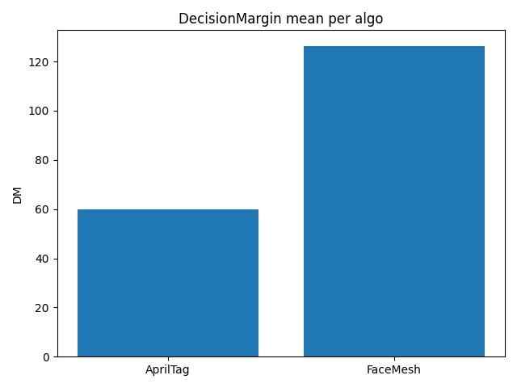
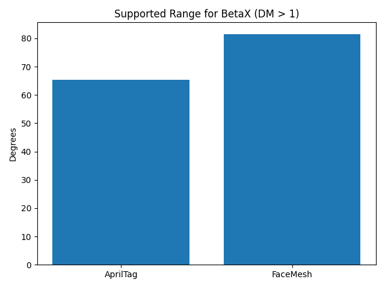
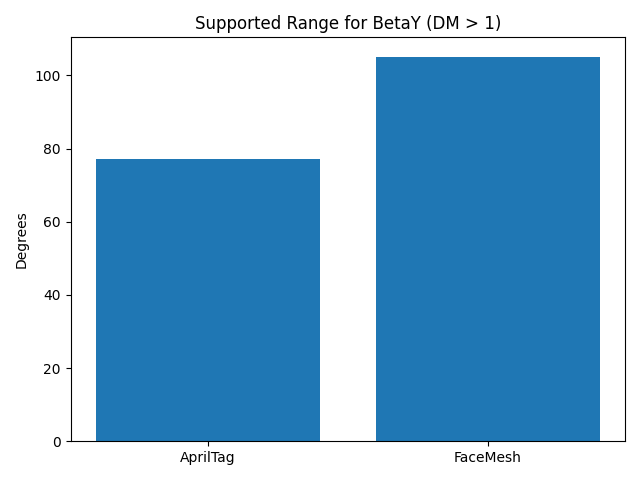
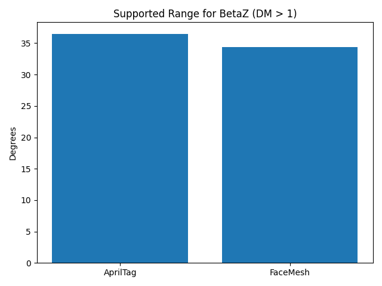